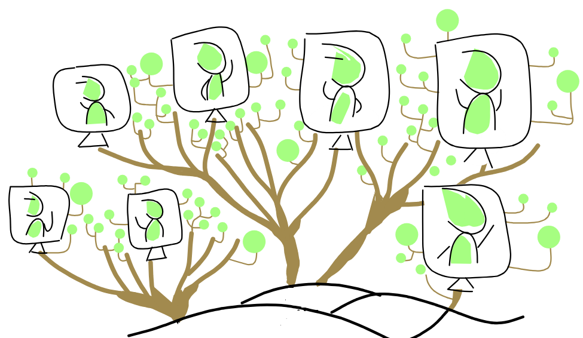
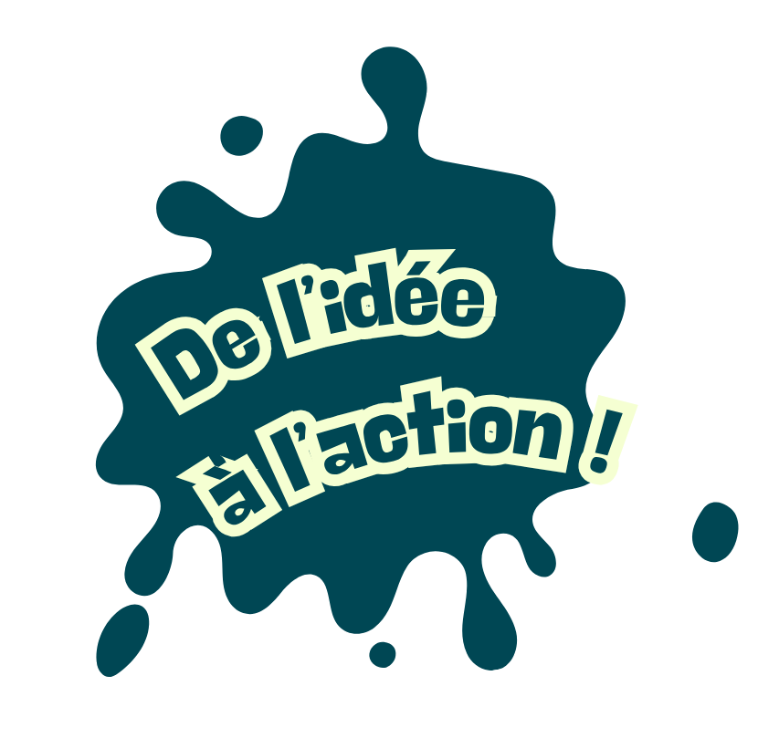
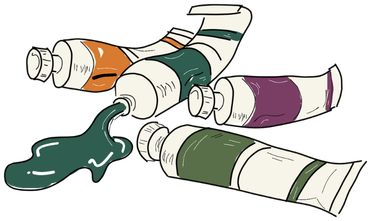
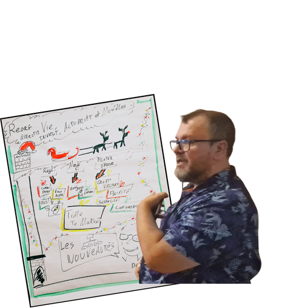
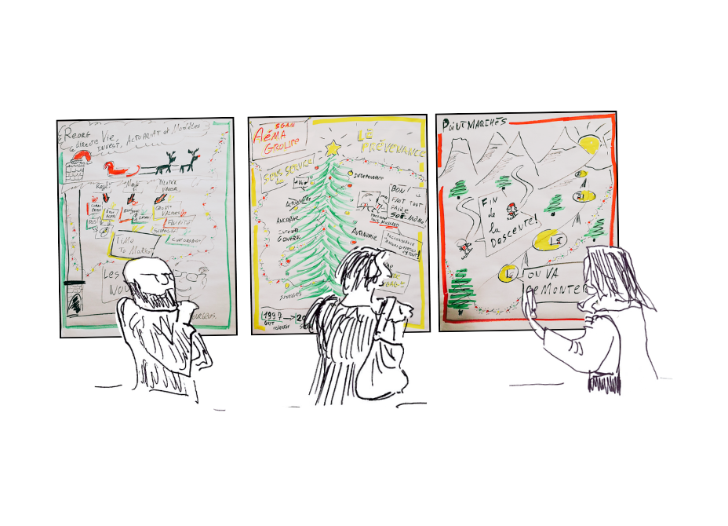
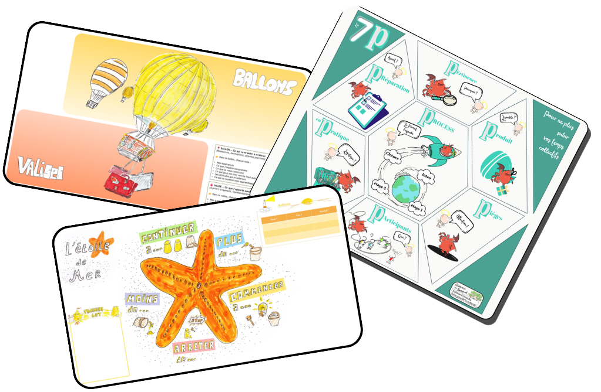
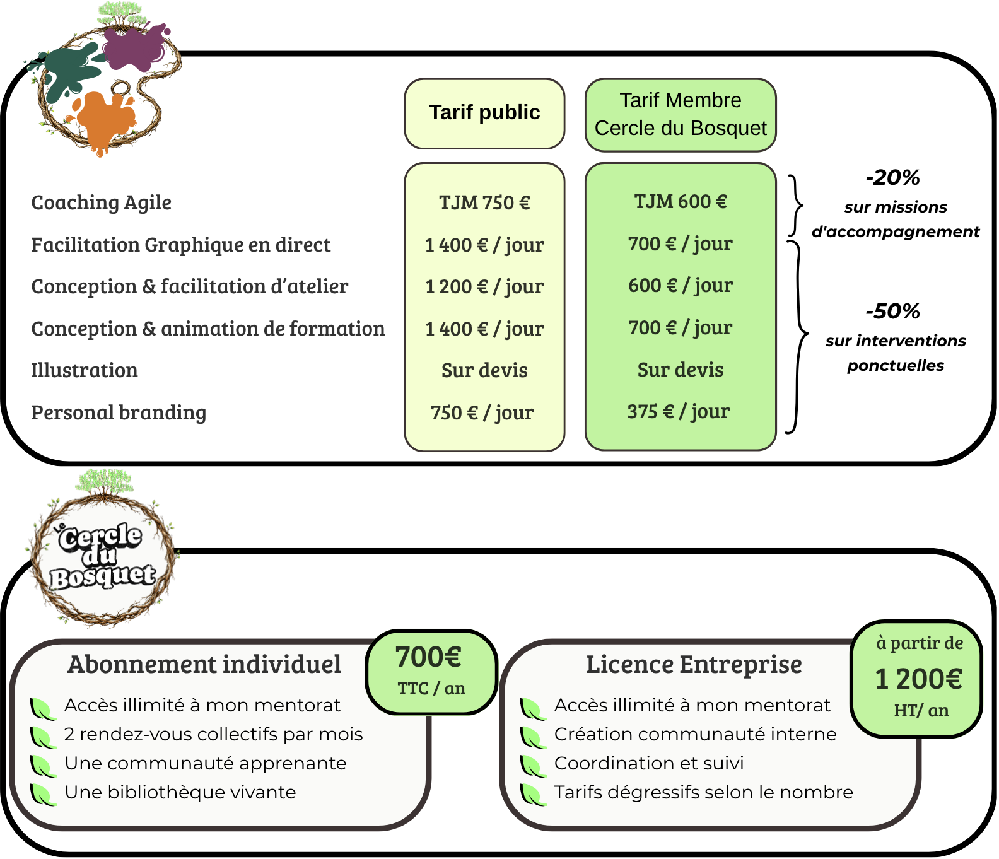

Faire grandir les équipes
Prendre du recul sur les dynamiques d’équipe, clarifier les besoins et expérimenter de nouvelles façons de travailler.
Stéphane Vandenbussche
J’accompagne les personnes et les équipes pour mieux coopérer, développer leurs compétences et renforcer leur capacité d’action, grâce au coaching, à la facilitation et à la formation.

Une palette de prestations
Selon votre besoin, je peux vous accompagner, faciliter vos temps collectifs ou vous aider à développer vos propres pratiques.

01 / Coaching

Coach agile depuis 2019
Une écoute pour comprendre vos enjeux et vous aider concrètement

Prendre du recul sur les dynamiques d’équipe, clarifier les besoins et expérimenter de nouvelles façons de travailler.
Relier les objectifs au terrain avec les OKR, le management visuel et des échanges qui font avancer.
Développer l’autonomie et les communautés de pratique, puis ajuster à partir de l’expérience.
02 / Facilitation

Facilitateur graphique & facilitateur d’ateliers
Facilitation des échanges, par l’animation comme par le dessin.

Construire un déroulé adapté à votre intention, aux participants et au résultat attendu.
Animer des échanges pour partager les points de vue, faire émerger des idées et décider ensemble.
Fresques, sketchnotes et supports visuels pour clarifier les échanges et garder une trace utile.
03 / Formation

Formateur
« On ne peut rien enseigner à autrui. On ne peut que l’aider à le découvrir lui-même. » attribué à Galilée

Passer d’une idée à un atelier cohérent : Pourquoi, Produit, Participants, Lieu, Préparation, Pratique et Processus.
Dépasser la peur de dessiner et acquérir un vocabulaire visuel simple pour expliquer, animer et mémoriser.
Créer une expérience d’apprentissage active, structurée et adaptée aux besoins réels des participants.

Quel que soit l’accompagnement, chaque intervention se construit avec vous, avant, pendant et après.

Avant

Pendant

Après
Les droits d’utilisation, de diffusion et de valorisation des créations sont définis ensemble dès le cadrage.
Le Cercle du Bosquet
Au-delà d’une intervention ponctuelle, le Cercle du Bosquet vous donne un accès illimité à mon mentorat, au fil de vos besoins, pour préparer vos ateliers, réunions, formations et supports, puis prendre du recul après leur mise en pratique.
Rendez-vous individuels, échanges asynchrones, temps collectifs, communauté de pratique et bibliothèque vivante.
Découvrir le Cercle du Bosquet
Retours d’expérience
Vous aussi, partagez votre expérience :
via le formulaire ou sur LinkedIn.
Recommandation LinkedIn
« Stéphane allie un professionnalisme sans faille à une créativité inspirante, le tout avec un calme et une constance qui rassurent. »
Recommandation LinkedIn
« Il sait rendre les échanges vivants, concrets et utiles, tout en gardant un cadre clair et bienveillant. »
Recommandation LinkedIn
« J’ai fortement apprécié sa pédagogie, sa douceur et l’attention portée à chacun, même en visio et très nombreux. »
Recommandation LinkedIn
« Cette collaboration s’est passée un peu comme une évidence, chacun lançant ses idées et l’atelier se construisant au fil des échanges et des rigolades. »
Retour de formation
« Ses outils pratiques et ses exemples concrets donnent envie de créer, d’expérimenter et d’animer des ateliers qui ont du sens. On en ressort à la fois confiant, inspiré et mieux armé. »
Retour de formation
« Hyper riche, merci pour ta grande générosité. Plein de partage d’expériences, de propositions originales et bien expliquées. »
Accompagnement en entreprise
Un accompagnement à l’écoute, qui aide à prendre du recul et à trouver ses propres réponses, dans un cadre sécurisant et sans jugement.
Accompagnement en entreprise
Une préparation structurée, des formats adaptés au besoin et une animation qui embarque les participants pour obtenir des contributions utiles.

Pour passer à l’action
Des outils à utiliser directement pour concevoir vos moments collectifs et prolonger vos apprentissages.
01
Le template 7P, ses mini-ateliers et d’autres canevas pour préparer et animer vos temps collectifs.
Découvrir les templates02
Retrouvez les supports partagés lors de mes formations pour revoir, approfondir et mettre en pratique.
Accéder aux supportsPréparer votre projet
Les tarifs publics et les tarifs réservés aux membres du Cercle du Bosquet.

À propos
Je suis Stéphane Vandenbussche, coach agile depuis 2019, facilitateur visuel et formateur. Ce qui m’anime : transmettre, stimuler la créativité et aider les personnes à mieux collaborer.
J’accompagne des collectifs variés et conçois des interventions sur mesure, adaptées à leurs enjeux. Le visuel est l’un de mes outils de prédilection : il rend les idées visibles, facilite les échanges et aide chacun à contribuer.
Mon approche croise l’agilité, les méthodologies participatives, l’intelligence collective, les outils visuels et les techniques de coaching. Elle s’appuie sur une communication bienveillante, nourrie par la CNV et le Solution Focus.
Je pars de votre réalité, de vos besoins et de ce qui fonctionne déjà pour vous aider à prendre du recul, expérimenter et développer durablement votre autonomie et votre capacité d’action.
Un atelier, une formation, un besoin à clarifier ?